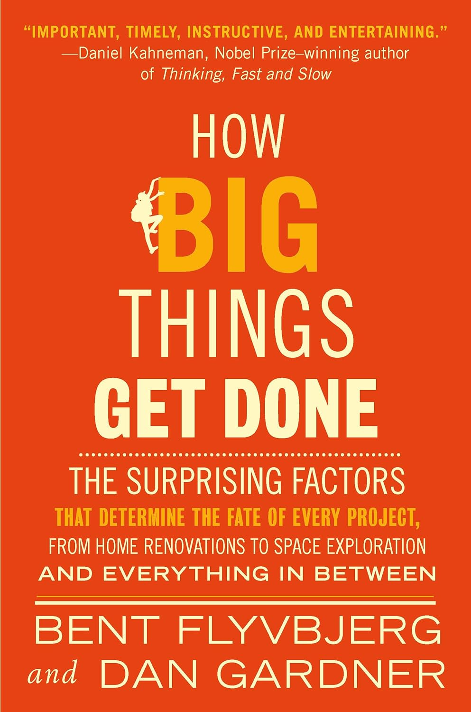

Book author: Bent Flyvbjerg, Dan Gardner
This book holds immense value for every developer - while it’s not centered around IT, it provides a comprehensive understanding of how projects unfold and, importantly, the reasons they may not succeed. The elements it discusses can be easily adapted to the IT realm, suggesting it may serve as a valuable read, not only for managers and product individuals, but everyone at large.
Key Learnings
The Law of Hofstander
It always takes longer than you expected, even when you take into account Hofstander’s Law
I’d wager everyone has stumbled upon this scenario before. You predict a task will be a two-hour, simple fix… only to find yourself pulling your hair out over it for the next two weeks. Good news - you’re not alone, it’s an everyone thing.
The Reasoning Behind Your Project
At the beginning of a project, we need to disrupt the psychology-driven dash to a premature conclusion by disentangling means and ends and thinking carefully about what exactly we want to accomplish.
Many programmers refrain from raising queries, preferring to have tasks provided by product people. However, initiating questions might help to comprehend the bigger picture of a business needs. This could even lead to the realization that what they hoped to provide through coding is unnecessary, or better alternatives exist.
A perfect example from my own work — a product owner asked me to integrate tool X, a bad developer would instantly start work on it with. Good developer, on the other hand, would question the purpose and could discover that similar functionality alerady exists with tool Y. Following the less code equals better code philosophy, isn’t that so?
Perpetual Novice Syndrome
[…] The Olympics are forever planned and delivered by beginners - a crippling deficiency I call “Eternal Beginner Syndrome”
The above quote is about the Olympics, organized every 4 years by a different country. As a result, nobody accumulates sufficient experience to organize the Olympics without delays and going over budget.
The author emphasized that for a projects optimal outcome, it’s best to engage highly experienced professionals and allow them to repeatedly work on problems in the same domains. This avoids falling prey to the beginner syndrome.
Experience translates to “gut feelings”
Often, they (Highly experienced project leaders) will feel that something is wrong or that there is a better way without quite being able to say why.
I’m sure everyone can relate to this. You’re reviewing code, and it seems to work as intended, the code appears okay, but there’s a nagging feeling that something’s off. The real challenge, then, is conveying this instinctive sense to the PR author.
Reference Class Forecasting
What makes the reference class the right anchor is what I emphasized in the previous chapter: relevant real-world experience.
RCF is a straightforward concept - collate data from projects similar to yours, calculate the average time and budget they used. This average should be the least budget you can anticipate; it’s unlikely you will be better that average.
My project is unique, there haven’t been any projects like this before. Are you certain? It’s improbable that no one has attempted to achieve what you’re aiming for. While other projects may not exactly mirror your, I’d wager many share similarities. Do not fall for uniques bias.